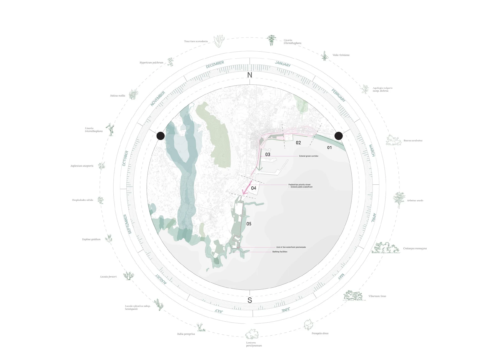
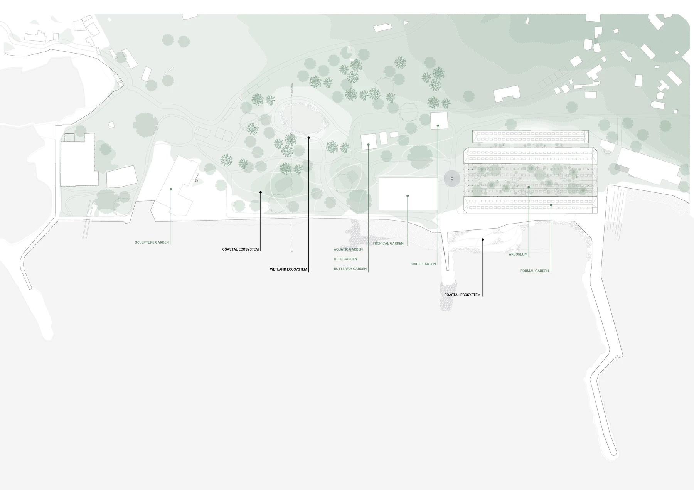
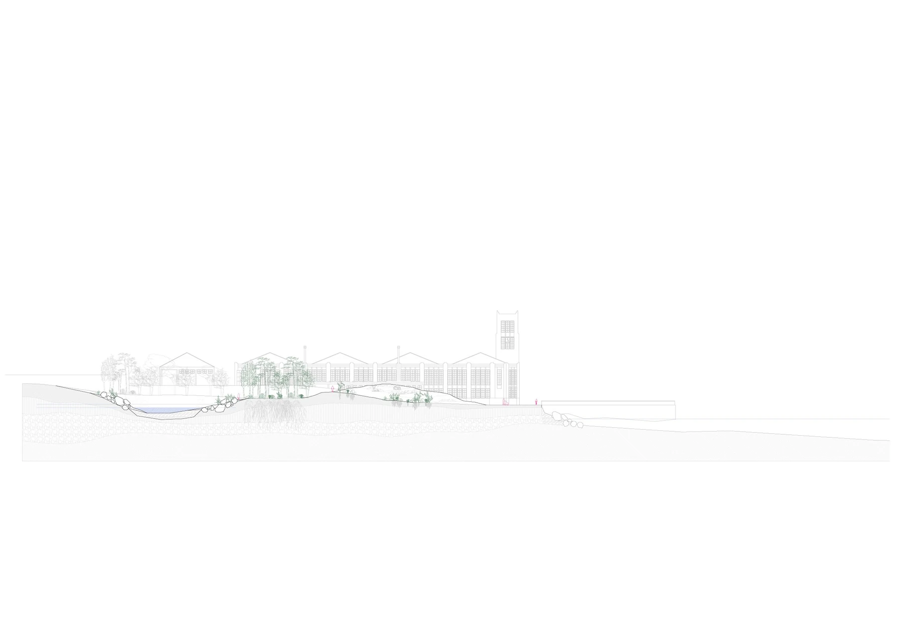
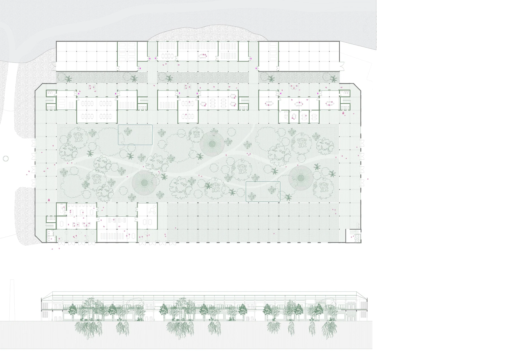
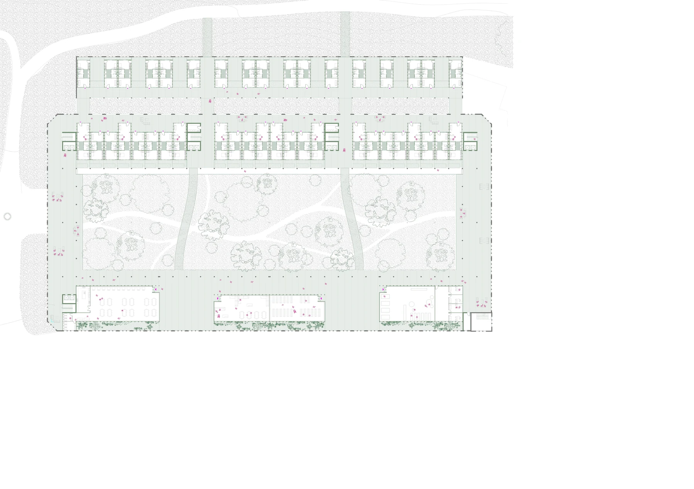
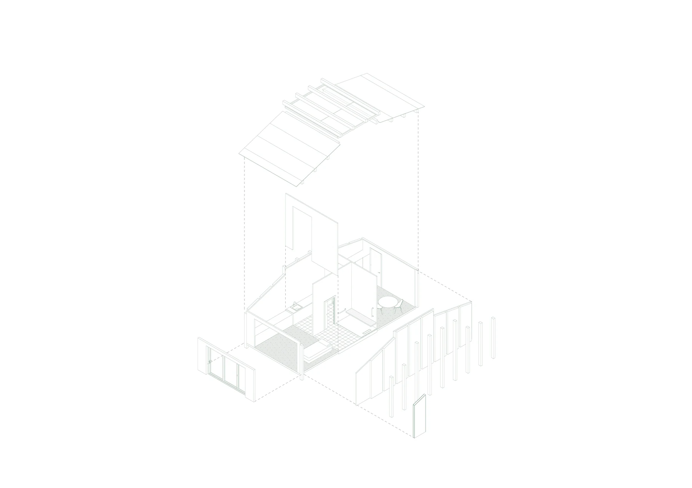
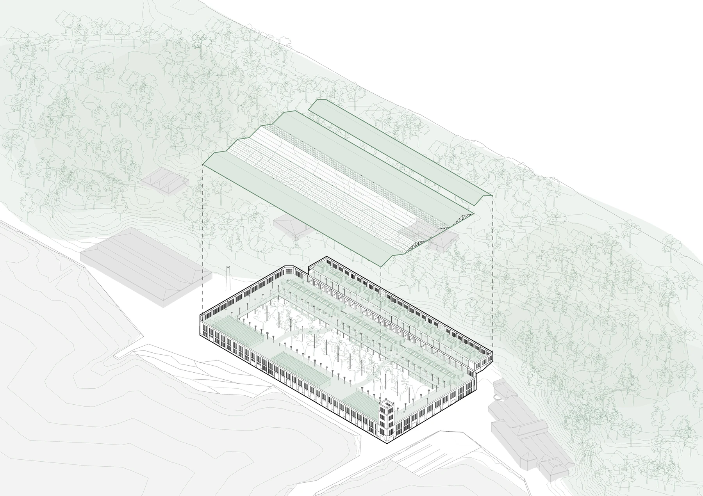
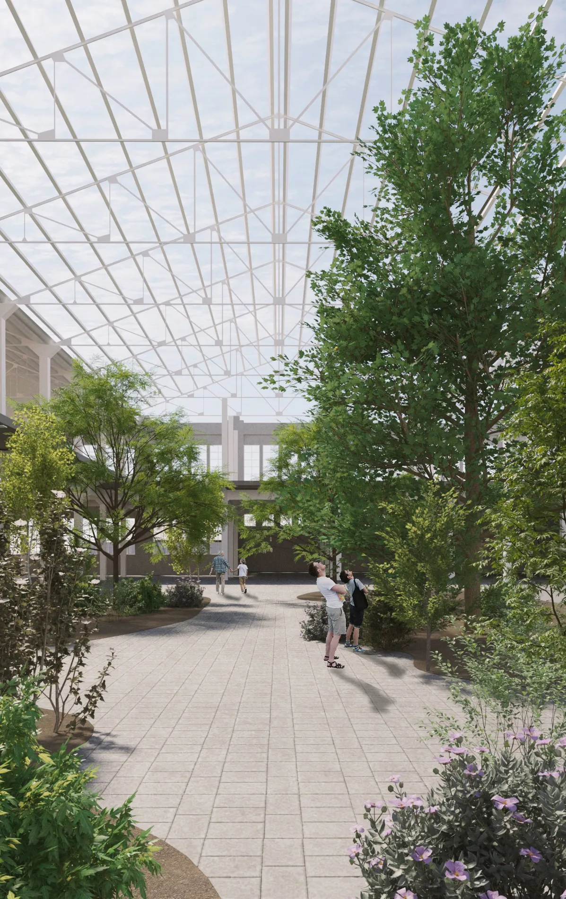

Landscape strategy
The project reuses excavated soil to form a protective hill along the coast, creating a natural buffer against sea-level rise and storm surges. New wetlands are introduced to manage stormwater, reduce flooding, and enhance biodiversity. Existing ecologies are preserved and integrated into the garden, allowing each zone to retain its natural character while supporting resilience and regeneration.


Programme distribution
The senior housing programme is composed of a series of compact, independent living units, supported by shared common areas such as kitchens, lounges, and activity spaces. These collective zones foster community, reduce isolation, and promote a sense of belonging among residents. By housing integrated inside the garden, the boundary between private and public is blurred, mirrored in the gradient of garden spaces available to residents.
The public garden is open on the ground floor for anyone to pass through. The senior housing sits on the first floor, offering privacy alongside the unique experience of looking out over the gardens from above.




